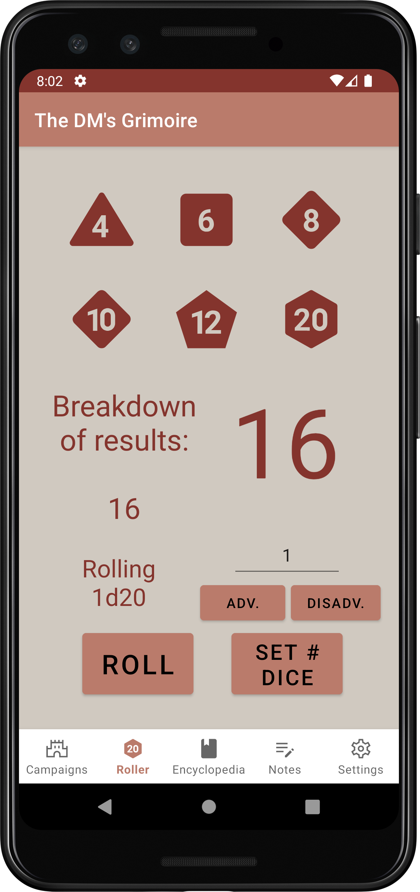

App Overview
This DM's Grimoire is intended to support a Dungeon Master (or DM) in running a campaign for their players. It contains an encyclopedia of monsters, items and spells for the DM's reference and also holds their players' information and allows changes, in-app. The DM's Grimoire also provides a die rolling suite that supports rolling multiple dice at once and can calculate advantaged and disadvantaged rolls.
Details
The DM's Grimoire opens on the login page, which supports Google Account synchronization or raw account creation. Once a user is logged in, they can access their campaigns and players, the dice roller, their notes and the settings page. Each of these is contained on a separate screen and can be accessed from the nav-bar at the bottom of each page.
Campaigns
The campaigns page allows a user to create, maintain and delete their campaigns. They can add or remove players and attach notes to each campaign.
Campaign Menu
The campaign menu shows a user's campaigns in order of creation.

Campaign Creation
After clicking the plus button, the user can create a new campaign. They enter the campaign's title and enter a short description.

Campaign Detail Screen
The detail screen shows the specifics of a campaign, like its players, NPCs, enemies and more.
Combat Screen
The combat screen allows a user to enter rolls for players' intitative as well as for enemies and other NPCs.
Dice Roller
The dice roller allows the DM to roll each of the six types of dice commonly used in Dungeons and Dragons. The rolls can consist of any number of type of die, but not a mixture of different types. For example, a DM can roll 12d6 at the same time; but they cannot roll 1d6 and 1d8 at the same time. When rolling a d20, a DM can use the advantage and disadvantage buttons to roll 2d20 and keep the highest or lowest, respectively.
The result breakdown displays each of the results of a multi-die roll, separating them with a comma. It will also display each of the results from an advantaged or disadvantaged roll.
Encyclopedia
The encyclopedia allows a DM to search for monsters, items and spells. The encyclopedia is based on a publicly available API for D&D information, which allows developers to access monsters, items, spells, abilities and more; all from official source materials.
Notes
The notes page allows a DM to record important notes and events from their campaign and keep them in a list, sorted by date of creation. Notes can be deleted and modified after creation.
Note Creation
At the bottom of the page, there is a button for adding a new campaign. A user can also choose an existing campaign to make notes for it.
After clicking the a campaign, the user is taken to a page for adding a new note. Upon clicking the 'Add Note' button, the user can enter the note's title and contents. After the note is filled with the intend information, the user clicks the 'Create Note' button to save it.
Note Modification
Upon clicking a specific, existing note, the user can see the note's details; including the title and contents.
Note Deletion
Notes can also be deleted by the user. By selecting a note, the user can choose to remove it from the notes page and from their account.
Settings
The settings page is the user's place to logout, report an issue or get information about the project. There are three options listed on this page. The first, allows the user to report an issue they encountered in the app or suggest a change or addition. The second, allows a user to logout of the application and return to the login page. The third, takes the user to the project repository's detail page.